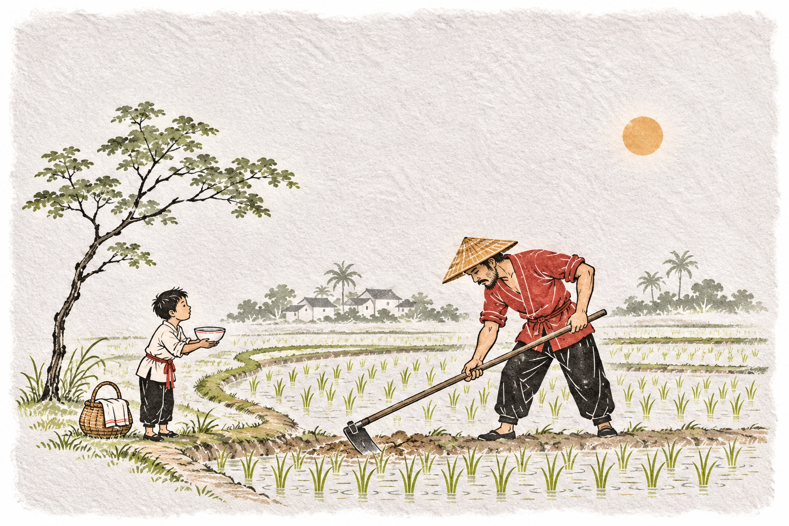

原参考作品约29秒 · 四个小世界
从纸墨小景到故事产品
点图中的画面查看原作或体验样片
01 / 先看实际效果
原参考，和我们探索的效果。
原作录屏与本地作品分开标注。
参考风格与氛围，场景和故事由我们自己创作。
我们的原创探索实际四幕 GIF · 此处画面预览无声

作者在后续回复里提供了《Paper River》体验入口。
原帖介绍了作品和所用模型，录屏留下四个场景的操作线索。作者站已核对作品介绍与入口。具体制作流程、运行时分工和开源许可仍待核实，下面以录屏观察和我们的独立实现为依据。
体验作者原作 ↗| 观察维度 | 原参考里的关系 | 我们探索后的认识 |
|---|---|---|
| 构图与形体 | 形体概括，主体较小，纸白和有限墨色共同组织画面。 | 我们的画面常更满、线纹更密。精致度要先从剪影、比例、线面层次与留白解决。 |
| 动作与结果 | 局部变化明确，操作对象与结果相互关联。 | 尝试了程序动作与完整姿态 GIF；手握、交接、承重和结果可见，比单纯增加运动重要。 |
| 故事与声音 | 录屏可见四个独立小景；本项目未分析原作音频。 | 加入关系故事、诗句与 MiniMax 旁白。声音过多、画面变化过少，会变成配图朗读。 |
| 完成度 | 参考作品提供了一个明确的审美目标。 | 已有可体验的原型和制作流程；人物一致性与帧间衔接仍有差距，没有证明已达到原作精致度。 |
怎样从一条作品动态做成研究
我们研究纸墨质感与局部反馈怎样讲清一个过程，再用多幕故事和制作台检验这套方法能否迁移。
找到可回查的来源
记下作者、原帖、说明、时长和素材地址。原帖访问受限时，使用公开帖文元数据保存出处。再沿作者的后续回复找到《Paper River》体验页。
查看来源记录 ↗按时间拆解画面
从约 29 秒录屏抽取 10 个观察帧，另为四个场景取样。记录纸白、彩墨、主体尺度，以及点击前后对象怎样变化。
查看四场景观察 ↗把观察变成实验
用 Canvas 分开处理墨色、纸纹和浅压印，再用添柴出汽、递篮和采叶检验动作结果。对照静稿、连续姿态和 GIF，检查握持、承重、画面跳变。
查看纸墨分层 ↗记录能复用什么
让《悯农》的 GIF 和字幕跟随旁白时钟，再用溪桥和“见全”验证同一套编辑与静态导出流程。记录原型做到了哪些事，以及真实用户还需要验证什么。
查看能力与边界 ↓
02 / 按问题归档
我们实际探索过的八个主题。
每个主题保留效果入口、获得的经验与局限。
这是探索图谱，不把旧版本都当成当前成品。
显示全部8个主题
03 / 哪些认识值得留下
走过的弯路，也是一部分结果。
把“为什么总觉得不够好”，
转成下一次可以执行的判断。
故事在风格之前
先说清谁在等谁、谁想做什么、这一幕改变了什么。等待、发现、相认与递篮，应在姿态和目光里成立。
纸纹补不了造型
人物比例、肩肘、袖口、手握道具与身体承重不对，增加纤维、压印和颗粒只会把问题盖得更复杂。
运动要解释变化
叶子从枝头到手中再到篓里，结果应该看得见。整图缩放、摆动或关节拼接，不能替代这一过程。
帧数不等于感染力
完整姿态减少了纸偶拼接感，但相邻画稿仍会跳变。要看接触、停顿、目光与释放，而不只报帧数。
声音要给画面留时间
旁白、字幕和动作共用时间线可以保证同步，却不能自动带来好节奏。画面需要足够的事件与停留。
演示、工具和产品分开看
样片说明一种可能；制作台说明能否复用；真实用户能否理解、愿不愿再用，仍要另外验证。
04 / 对我们的价值
已经留下的能力，与还没跑通的部分。
不是把每一幅图继续做大，
而是让创作流程、素材和交付可以重复使用。
故事与人物动机→分镜与静态画稿→必要动作与声音→阅读、参与与验收
| 沉淀层 | 当前已有 | 还需要补齐 |
|---|---|---|
| 创作方法 | 故事先行、静态先行、人物接触检查、定向返修的经验。 | 更稳定的审美验收标准，更多题材与真实受众的验证。 |
| 视觉与动作资产 | 风格规则、人物与场景、完整姿态、提示词、原件和版本记录。 | 角色一致性、动作连续性、可替换资产，以及可控的制作成本。 |
| 有声呈现 | 缓存 MiniMax 旁白、词级字幕、GIF 解码、音频时钟与暂停回看原型。 | 进一步验证节奏、不同内容的复用，形成一致的播放体验。 |
| 故事制作台 | 两案例配置、单幕内容与图稿编辑、预览、静态网页/封面/长图导出。 | 统一内容规范与媒体管理；现有静态导出不自动生成或打包全部动作和旁白。 |
| 交付与验证 | 独立演示入口、离线试看包、操作检查与本地反馈导出。 | 真实试看反馈与迭代闭环；检查项通过不能代替艺术效果与用户价值验收。 |
05 / 六种可扩展的用途
同一种风格，不同的用户任务。
已有样片的完成度不同。
下面是基于现有产物的项目内判断，不是市场验证结论。
接下来怎样收敛
用一个方向验证完整价值，再扩展。
先验证已有故事《悯农》已有完整有声案例和试看包，可以先检查能否看懂、记住，并愿意再看。
再验证制作流程让第三份真实内容进入制作台，观察是否需要反复改程序，能否由创作者独立完成交付。
再选择新场景文物或品牌故事可择一做深，补真实资料与实际使用入口，避免六个方向同时铺开。
资料与继续查看
从总览回到实际产物。
可回查来源、版本与制作过程。
01原效果研究与机制分析观察、推断与未知项02原研究展台材质层、参数与早期原创小景03制作台使用与导出内容格式、静态成品与范围04试看与反馈方法已有交付，真实验证尚待完成05图稿与提示词记录示例实际素材与参考角色06产品与能力规划已有基础与后续设想
原作画面署名 Ann Nguyen。我们的场景、人物和故事独立创作，部分画稿由 AI 辅助生成。原作开源授权仍待核实，现有研究结论基于观察、制作与原型验收。
部分索引暂未加载，请刷新后再试；上方原作与成品入口仍可使用。
评论引导与效果分析
从看见作品，到亲手体验，再到能指出一个具体变化。
原作回复的作用
主帖用短录屏展示四个小景，作者再在回复中给出体验链接。读者由此可以从观看演示进入实际操作，研究时也多了一条可复查的入口。当前资料可以解释这条路径怎样工作，点击率和评论转化仍待数据验证。
原帖与回复 ↗作者体验页 ↗
我们怎样邀请读者反馈
体验《悯农》并保存反馈 ↗试看页可手动导出反馈，方便据原话复查。
发布时公开评论与真实试看仍在待收集阶段。上述指标用于后续复盘。查看试看方案 ↗